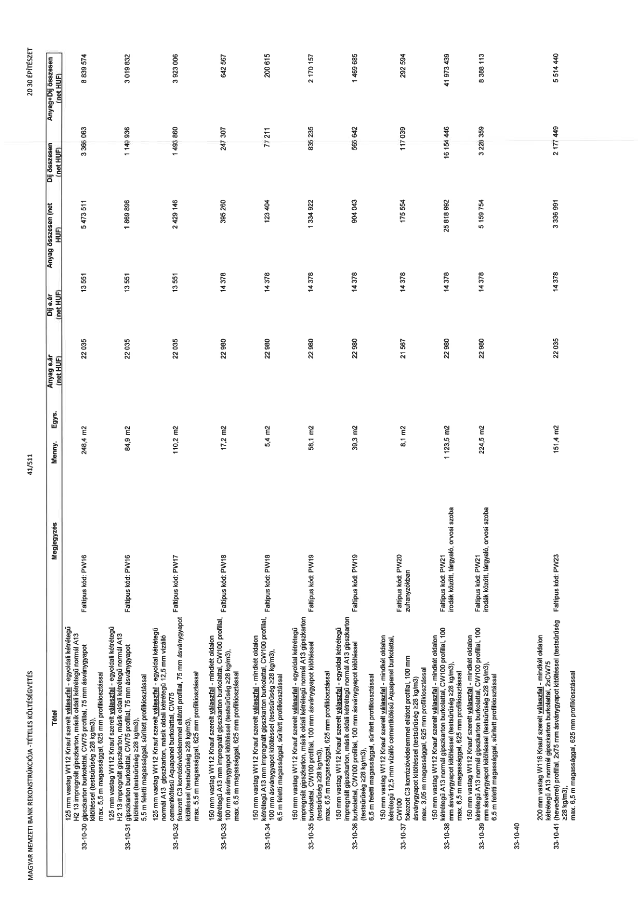

| Tétel | Megjegyzés | Menny. | Egys. | Anyag e.ár (net HUF) | Díj e.ár (net HUF) | Anyag összesen (net HUF) | Díj összesen (net HUF) | Anyag+Díj összesen (net HUF) |
|---|---|---|---|---|---|---|---|---|
| 33-10-30 | 125 mm vastag W112 Knauf szerelt válaszfal - egyoldal kétrétegű H2 13 impregnált gipszkarton, másik oldal kétrétegű normál A13 gipszkarton burkolattal, CW75 profillal, 75 mm ásványgyapot kitöltéssel (testsűrűség ≥28 kg/m3), max. 5,5 m magassággal, 625 mm profilkiosztással. Faltípus kód: PW16 | 248,4 | m2 | 22 035 | 13 551 | 5 473 511 | 3 366 063 | 8 839 574 |
| 33-10-31 | 125 mm vastag W112 Knauf szerelt válaszfal - egyoldal kétrétegű H2 13 impregnált gipszkarton, másik oldal kétrétegű normál A13 gipszkarton burkolattal, CW75 profillal, 75 mm ásványgyapot kitöltéssel (testsűrűség ≥28 kg/m3), 5,5 m feletti magassággal, sűrített profilkiosztással. Faltípus kód: PW16 | 84,9 | m2 | 22 035 | 13 551 | 1 869 896 | 1 149 936 | 3 019 832 |
| 33-10-32 | 125 mm vastag W112 Knauf szerelt válaszfal - egyoldal kétrétegű normál A13 gipszkarton, másik oldalon kétrétegű 12,5 mm vízálló cementkötésű Aquapanel burkolattal, CW75 fokozott C3 korrózióvédelemmel ellátott profillal, 75 mm ásványgyapot kitöltéssel (testsűrűség ≥28 kg/m3), max. 5,5 m magassággal, 625 mm profilkiosztással. Faltípus kód: PW17 | 110,2 | m2 | 22 035 | 13 551 | 2 429 146 | 1 493 860 | 3 923 006 |
| 33-10-33 | 150 mm vastag W112 Knauf szerelt válaszfal - mindkét oldalon kétrétegű A13 normál gipszkarton burkolattal, CW100 profillal, 100 mm ásványgyapot kitöltéssel (testsűrűség ≥28 kg/m3), max. 6,5 m magassággal, 625 mm profilkiosztással. Faltípus kód: PW18 | 17,2 | m2 | 22 980 | 14 378 | 395 260 | 247 307 | 642 567 |
| 33-10-34 | 150 mm vastag W112 Knauf szerelt válaszfal - mindkét oldalon kétrétegű A13 normál gipszkarton burkolattal, CW100 profillal, 100 mm ásványgyapot kitöltéssel (testsűrűség ≥28 kg/m3), 6,5 m feletti magassággal, sűrített profilkiosztással. Faltípus kód: PW18 | 5,4 | m2 | 22 980 | 14 378 | 123 404 | 77 211 | 200 615 |
| 33-10-35 | 150 mm vastag W112 Knauf szerelt válaszfal - egyoldal kétrétegű impregnált gipszkarton, másik oldal kétrétegű normál A13 gipszkarton burkolattal, CW100 profillal, 100 mm ásványgyapot kitöltéssel (testsűrűség ≥28 kg/m3), max. 6,5 m magassággal, 625 mm profilkiosztással. Faltípus kód: PW19 | 58,1 | m2 | 22 980 | 14 378 | 1 334 922 | 835 235 | 2 170 157 |
| 33-10-36 | 150 mm vastag W112 Knauf szerelt válaszfal - egyoldal kétrétegű impregnált gipszkarton, másik oldal kétrétegű normál A13 gipszkarton burkolattal, CW100 profillal, 100 mm ásványgyapot kitöltéssel (testsűrűség ≥28 kg/m3), 6,5 m feletti magassággal, sűrített profilkiosztással. Faltípus kód: PW19 | 39,3 | m2 | 22 980 | 14 378 | 904 043 | 565 642 | 1 469 685 |
| 33-10-37 | 150 mm vastag W112 Knauf szerelt válaszfal - mindkét oldalon kétrétegű 12,5 mm vízálló cementkötésű Aquapanel burkolattal, CW100 fokozott C3 korrózióvédelemmel ellátott profillal, 100 mm ásványgyapot kitöltéssel (testsűrűség ≥28 kg/m3), max. 3,05 m magassággal, 625 mm profilkiosztással. Faltípus kód: PW20 zuhanyzók | 8,1 | m2 | 21 567 | 14 378 | 175 554 | 117 039 | 292 594 |
| 33-10-38 | 150 mm vastag W112 Knauf szerelt válaszfal - mindkét oldalon kétrétegű A13 normál gipszkarton burkolattal, CW100 profillal, 100 mm ásványgyapot kitöltéssel (testsűrűség ≥28 kg/m3), max. 6,5 m magassággal, 625 mm profilkiosztással. Faltípus kód: PW21 irodák között, tárgyaló, orvosi szoba | 1123,5 | m2 | 22 980 | 14 378 | 25 818 992 | 16 154 446 | 41 973 439 |
| 33-10-39 | 150 mm vastag W112 Knauf szerelt válaszfal - mindkét oldalon kétrétegű A13 normál gipszkarton burkolattal, CW100 profillal, 100 mm ásványgyapot kitöltéssel (testsűrűség ≥28 kg/m3), 6,5 m feletti magassággal, sűrített profilkiosztással. Faltípus kód: PW21 irodák között, tárgyaló, orvosi szoba | 224,5 | m2 | 22 980 | 14 378 | 5 159 754 | 3 228 359 | 8 388 113 |
| 33-10-41 | 200 mm vastag W116 Knauf szerelt válaszfal - mindkét oldalon kétrétegű A13 normál gipszkarton burkolattal, 2xCW75 (hevederrel) profillal, 2x75 mm ásványgyapot kitöltéssel (testsűrűség ≥28 kg/m3), max. 6,5 m magassággal, 625 mm profilkiosztással. Faltípus kód: PW23 | 151,4 | m2 | 22 035 | 14 378 | 3 336 991 | 2 177 449 | 5 514 440 |
